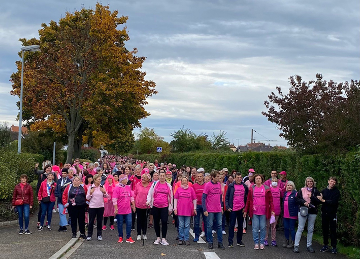

La marche qui a emprunté le parcours Vitaboucle n°14 de 6,1 km à travers la ville le 16 octobre dernier à Hoenheim a connu un véritable succès.
Cette marche solidaire a rassemblé plus de 600 personnes pour soutenir la marraine de la Strasbourgoeise 2022 Karine DEBARGUE, hoenheimoise.
Le rendez-vous a été donné à 9h30 devant la mairie pour le départ.
La participation à cette marche était libre, une urne a été mise à disposition pour récolter les dons au profit de l’ICANS.
Toutes les associations sportives de la ville, les pompiers, ainsi que les commerçants de la ville ont participé activement à cette marche.
Le ravitaillement en fin de marche place des marchés a été offert par nos sponsors :
- Super U Hoenheim et Carrefour Express Hoenheim ont fait don de petites bouteilles d’eau
- La boulangerie « Les Délices du Ried » a fait don de 20 kougelhopfs
- Adom Optic Hoenheim a financé l’achat de bananes et d’oranges
Merci à tous pour votre mobilisation !
Retrouvez ici toutes les photos de cette marche :
- Photos Jean-Louis PLUMERE : https://photos.app.goo.gl/VJpP18gcB9PXv4N26
- Photos de la Ville de Hoenheim, Martine JEROME et Jeannot SCHENCK : https://photos.app.goo.gl/r4qKRXdfjxFdrB5Q6
- Photos Serge MERCK : https://www.flickr.com/photos/193864143@N02/albums/72177720302972230/